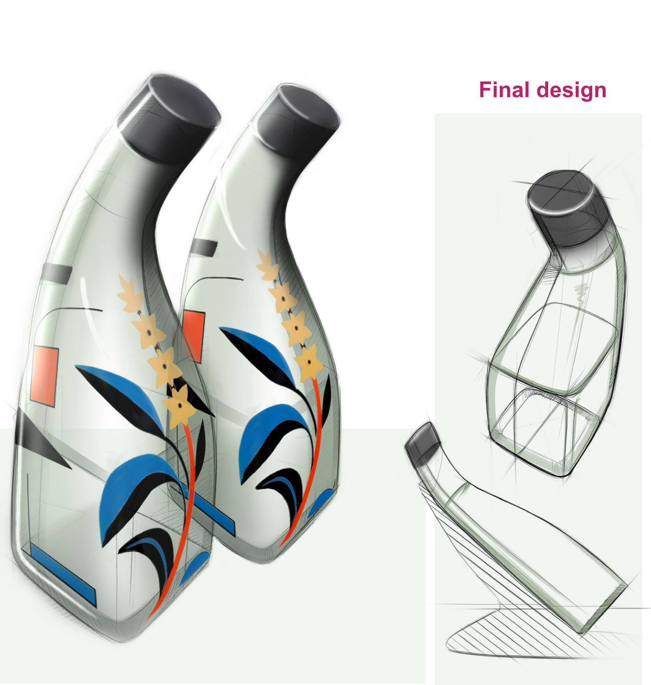
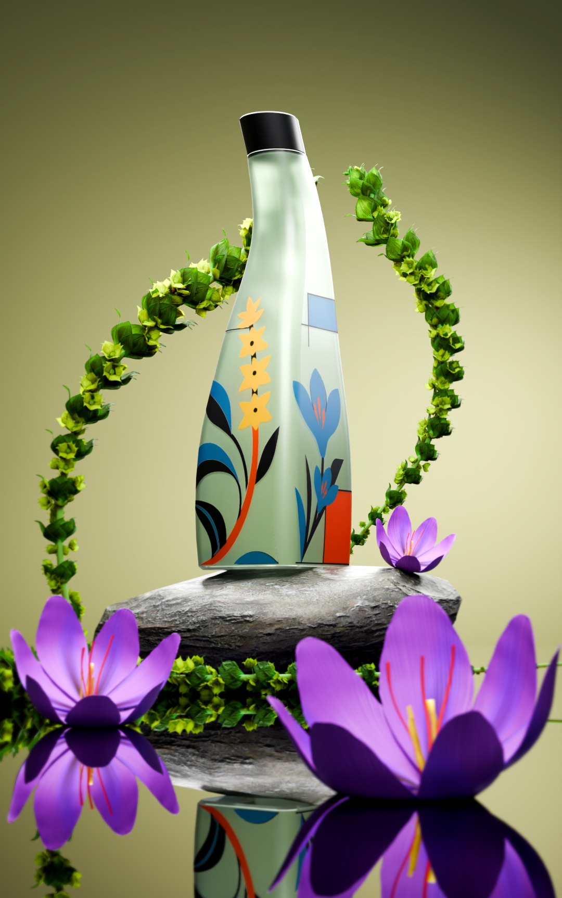
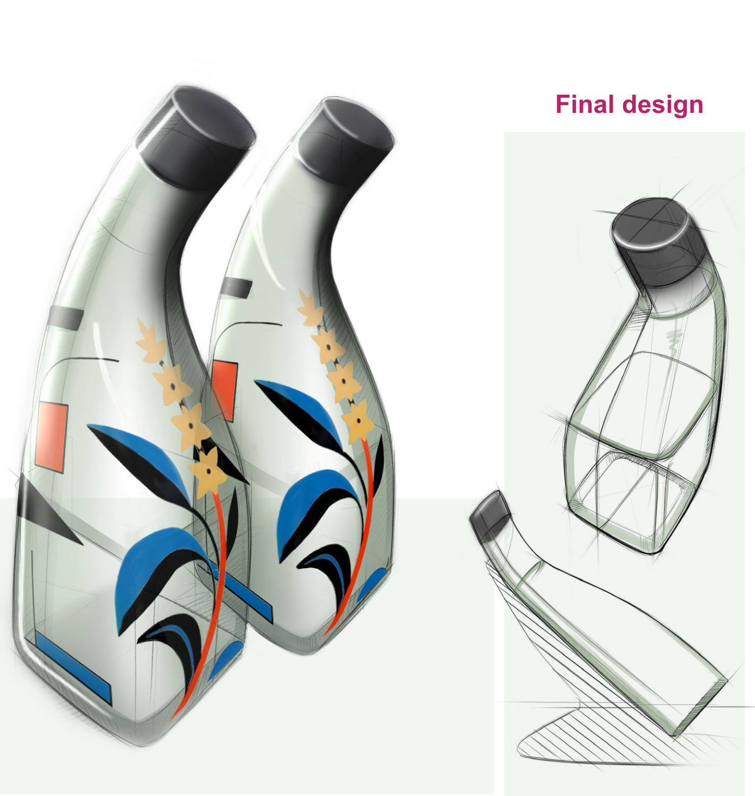
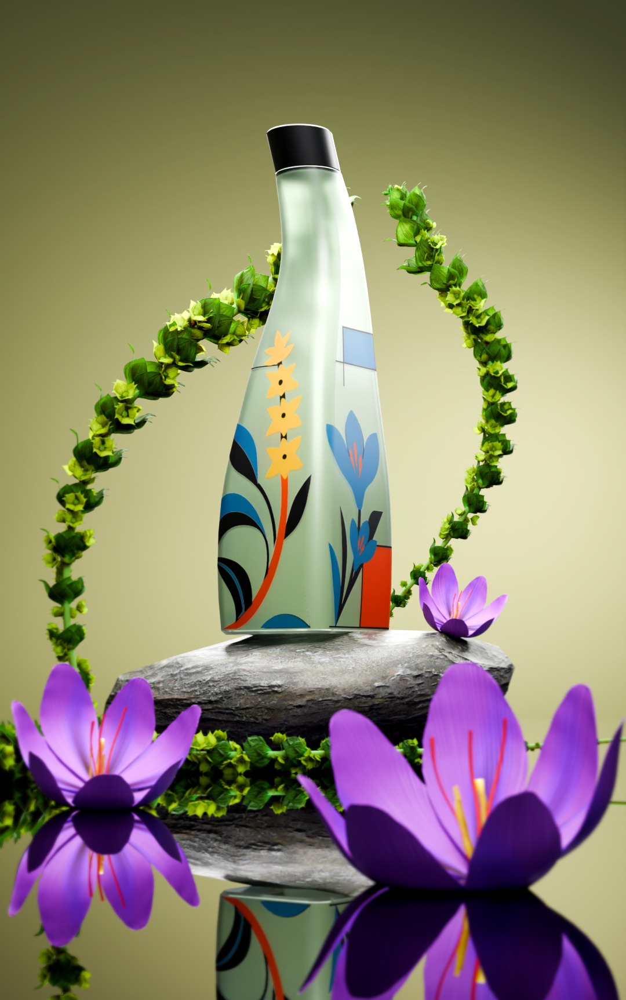

Tea Packaging.
“
Η συσκευασία του τσαγιού αποτυπώνει τα συστατικά που εμπεριέχει, δηλαδή τσάι του βουνού / sideritis μαζί με τον κρόκο Κοζάνης, με έναν ιδιαίτερο τρόπο.
Το στυλ του γραφιστικού είναι εμπνευσμένο από το καλλιτεχνικό κίνημα του Bauhaus, τα χρώματα του γραφιστικού ακολουθούν τις αρχές του κινήματος, δηλαδή το κόκκινο, μπλε, κίτρινο και μαύρο.
Η καμπυλωτή, ελαφρώς δυναμική μορφή του μπουκαλιού διαφοροποιείται από τις κλασικές λύσεις και παραπέμπει σε μια λειτουργική αλλά και καλλιτεχνική φόρμα.
 


